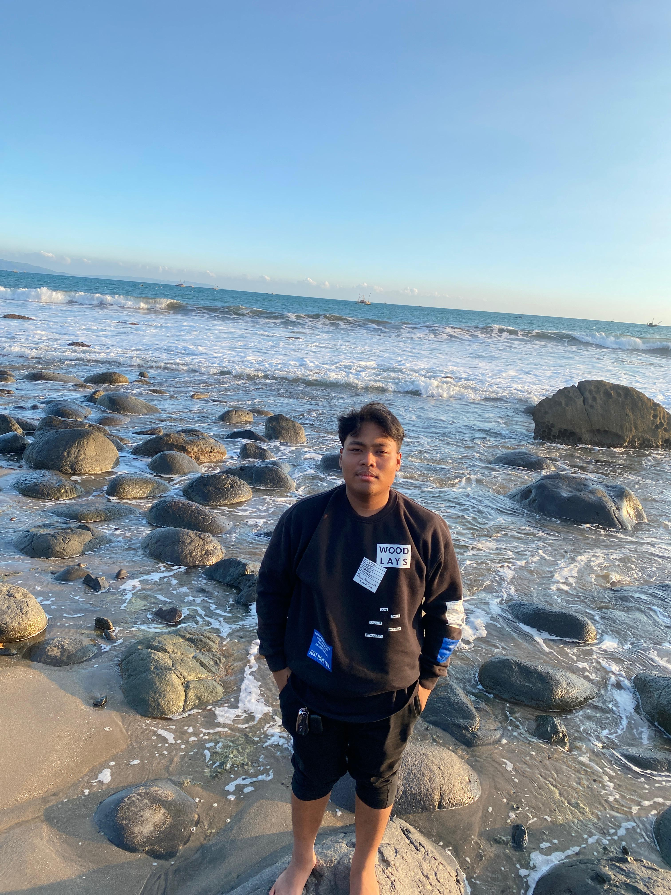
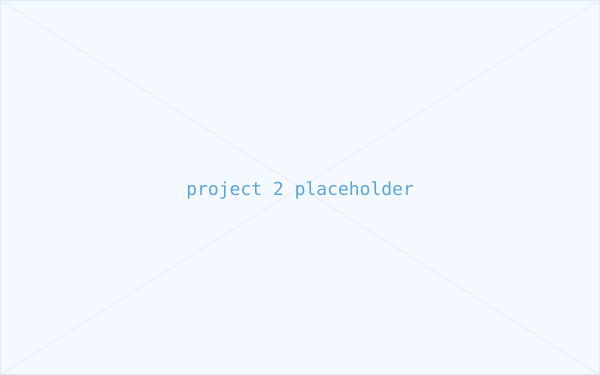
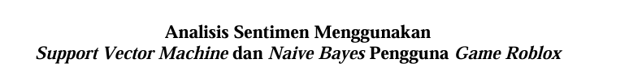

UI/UX Design
Merancang alur dan antarmuka yang mudah dipahami, dari wireframe hingga purwarupa interaktif.
Saya Muhammad Arifin, mahasiswa Sistem Informasi yang fokus pada dua sisi produk digital: pengalaman yang dilihat pengguna (UI/UX) dan fondasi data di baliknya (Database Administration).

Merancang alur dan antarmuka yang mudah dipahami, dari wireframe hingga purwarupa interaktif.
Merancang skema basis data, menjaga integritas data, dan mengoptimalkan query untuk performa yang stabil.

Deskripsi singkat proyek — ganti dengan studi kasus UI/UX atau database asli kamu.
Lihat detail
Deskripsi singkat proyek — ganti dengan studi kasus UI/UX atau database asli kamu.
Lihat detail
Penelitian komparatif menggunakan SVM dan Naive Bayes untuk menganalisis sentimen ulasan pengguna game Roblox di Google Play Store.
Lihat detailSaya terbuka untuk diskusi proyek UI/UX, kebutuhan basis data, atau sekadar bertukar ide seputar sistem informasi.
Hubungi Saya